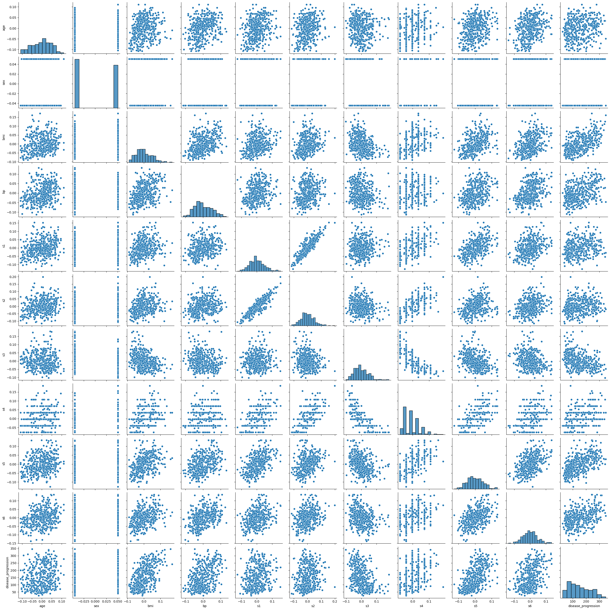
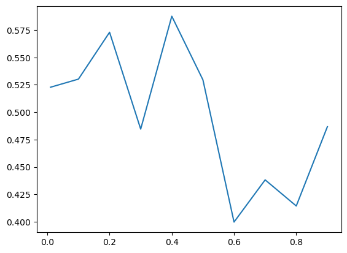

import sklearn
import sklearn.datasets
dataset = sklearn.datasets.load_diabetes()
# the result is a dictionary:
# 'data': features
# 'target' labels
# 'feature_names': names of the features
# `DESCR`: descriptionMachine learning: regressions
Objectives:
- create a training set and a validation set
- train a model with sklearn
- perform a validation test
Diabetes dataset: basic regression
Import the diabetes dataset from sklearn. Describe it.
print( dataset['DESCR'] ).. _diabetes_dataset:
Diabetes dataset
----------------
Ten baseline variables, age, sex, body mass index, average blood
pressure, and six blood serum measurements were obtained for each of n =
442 diabetes patients, as well as the response of interest, a
quantitative measure of disease progression one year after baseline.
**Data Set Characteristics:**
:Number of Instances: 442
:Number of Attributes: First 10 columns are numeric predictive values
:Target: Column 11 is a quantitative measure of disease progression one year after baseline
:Attribute Information:
- age age in years
- sex
- bmi body mass index
- bp average blood pressure
- s1 tc, total serum cholesterol
- s2 ldl, low-density lipoproteins
- s3 hdl, high-density lipoproteins
- s4 tch, total cholesterol / HDL
- s5 ltg, possibly log of serum triglycerides level
- s6 glu, blood sugar level
Note: Each of these 10 feature variables have been mean centered and scaled by the standard deviation times the square root of `n_samples` (i.e. the sum of squares of each column totals 1).
Source URL:
https://www4.stat.ncsu.edu/~boos/var.select/diabetes.html
For more information see:
Bradley Efron, Trevor Hastie, Iain Johnstone and Robert Tibshirani (2004) "Least Angle Regression," Annals of Statistics (with discussion), 407-499.
(https://web.stanford.edu/~hastie/Papers/LARS/LeastAngle_2002.pdf)
# create a dataframe
import pandas
df = pandas.DataFrame(dataset['data'], columns=dataset['feature_names'])
df['disease_progression'] = dataset['target']df.describe()
# we observe that mean of varaibles is zero
# standard deviations are the same for all variables
# model has been normalized already:| age | sex | bmi | bp | s1 | s2 | s3 | s4 | s5 | s6 | disease_progression | |
|---|---|---|---|---|---|---|---|---|---|---|---|
| count | 4.420000e+02 | 4.420000e+02 | 4.420000e+02 | 4.420000e+02 | 4.420000e+02 | 4.420000e+02 | 4.420000e+02 | 4.420000e+02 | 4.420000e+02 | 4.420000e+02 | 442.000000 |
| mean | -2.511817e-19 | 1.230790e-17 | -2.245564e-16 | -4.797570e-17 | -1.381499e-17 | 3.918434e-17 | -5.777179e-18 | -9.042540e-18 | 9.293722e-17 | 1.130318e-17 | 152.133484 |
| std | 4.761905e-02 | 4.761905e-02 | 4.761905e-02 | 4.761905e-02 | 4.761905e-02 | 4.761905e-02 | 4.761905e-02 | 4.761905e-02 | 4.761905e-02 | 4.761905e-02 | 77.093005 |
| min | -1.072256e-01 | -4.464164e-02 | -9.027530e-02 | -1.123988e-01 | -1.267807e-01 | -1.156131e-01 | -1.023071e-01 | -7.639450e-02 | -1.260971e-01 | -1.377672e-01 | 25.000000 |
| 25% | -3.729927e-02 | -4.464164e-02 | -3.422907e-02 | -3.665608e-02 | -3.424784e-02 | -3.035840e-02 | -3.511716e-02 | -3.949338e-02 | -3.324559e-02 | -3.317903e-02 | 87.000000 |
| 50% | 5.383060e-03 | -4.464164e-02 | -7.283766e-03 | -5.670422e-03 | -4.320866e-03 | -3.819065e-03 | -6.584468e-03 | -2.592262e-03 | -1.947171e-03 | -1.077698e-03 | 140.500000 |
| 75% | 3.807591e-02 | 5.068012e-02 | 3.124802e-02 | 3.564379e-02 | 2.835801e-02 | 2.984439e-02 | 2.931150e-02 | 3.430886e-02 | 3.243232e-02 | 2.791705e-02 | 211.500000 |
| max | 1.107267e-01 | 5.068012e-02 | 1.705552e-01 | 1.320436e-01 | 1.539137e-01 | 1.987880e-01 | 1.811791e-01 | 1.852344e-01 | 1.335973e-01 | 1.356118e-01 | 346.000000 |
import seabornseaborn.pairplot(df)
Split the dataset into a training set (70%) and a test set (30%)
from sklearn.model_selection import train_test_split# features: dataset['data']
# dataset['data'].shape # one line per observation, one column per feature (variable)# labels: dataset['target'] what we are trying to predict
dataset['target'].shape(442,)X_train, X_test, y_train, y_test = train_test_split(dataset['data'], dataset['target'], test_size=0.3, random_state=56)
# the choice of a random_state initializes a random seed so that every time it is run the notebook
# returns exactly the same resultsTrain a linear model (with intercept) on the training set
# since the model is already normalized, we can create the model directly
from sklearn.linear_model import LinearRegression
model = LinearRegression() # don't forget the round bracket to get a model object
model.fit(X_train, y_train)LinearRegression()In a Jupyter environment, please rerun this cell to show the HTML representation or trust the notebook.
On GitHub, the HTML representation is unable to render, please try loading this page with nbviewer.org.
LinearRegression()
# visualize model predictions:
# from matplotlib import pyplot as plt
# plt.plot( )
# plt.plot( model.predict(X_train) )model.intercept_ # a152.82810842206453model.coef_ # b_1, b_2, .... b_10|array([ 3.04174075, -209.76813682, 501.77871853, 286.88207011,
-991.92731799, 603.10838272, 228.80501285, 226.30296964,
905.67772303, 92.55739263])Compute the fitting score on the test set. (Bonus: compare with your own computation of \(R^2\))
model.score(X_test, y_test)0.43965636272283437# compare with the training set:
model.score(X_train, y_train)0.541861476456197Should we adjust the size of the test set? What would be the problem?
#### WARNING
####
#### very bad approach
# let's try different sizes
sizes = [0.01, 0.1, 0.2, 0.3, 0.4, 0.5, 0.6, 0.7, 0.8, 0.9]
scores = []
for s in sizes:
X_train, X_test, y_train, y_test = train_test_split(dataset['data'], dataset['target'], test_size=0.3)
model = LinearRegression() # don't forget the round bracket to get a model object
model.fit(X_train, y_train)
score = model.score(X_test, y_test) # score with x% test set
scores.append(score)from matplotlib import pyplot as plt
plt.plot(sizes, scores)
Implement \(k\)-fold model with \(k=3\).
X = dataset['data']
y = dataset['target']# to keep the scores
scores = []from sklearn.model_selection import KFold
kf = KFold(n_splits=3)
for train_index, test_index in kf.split(X):
X_train, X_test = X[train_index], X[test_index]
y_train, y_test = y[train_index], y[test_index]
## train a model in X_train, y_train
## test it on X_test, y_test
model = LinearRegression() # don't forget the round bracket to get a model object
model.fit(X_train, y_train)
score = model.score(X_test, y_test) # score with x% test set
scores.append(score)scores[0.46930417754348197, 0.4872526062543143, 0.5095496056127979]# it gives us a sense of the predictive power of the regressionBonus: use statsmodels (or linearmodels) to estimate the same linear model on the full sample. Is it always a superior method?
import statsmodels
from statsmodels.formula import api as smfdf.columnsIndex(['age', 'sex', 'bmi', 'bp', 's1', 's2', 's3', 's4', 's5', 's6',
'disease_progression'],
dtype='object')regmodel = smf.ols(formula="disease_progression ~ age + sex + bmi + bp + s1 + s2 + s3 + s4 + s5 + s6", data=df)
regresults = regmodel.fit()regresults.summary() # econometric estimation of R^2 is 0.51| Dep. Variable: | disease_progression | R-squared: | 0.518 |
| Model: | OLS | Adj. R-squared: | 0.507 |
| Method: | Least Squares | F-statistic: | 46.27 |
| Date: | Mon, 27 Mar 2023 | Prob (F-statistic): | 3.83e-62 |
| Time: | 21:46:43 | Log-Likelihood: | -2386.0 |
| No. Observations: | 442 | AIC: | 4794. |
| Df Residuals: | 431 | BIC: | 4839. |
| Df Model: | 10 | ||
| Covariance Type: | nonrobust |
| coef | std err | t | P>|t| | [0.025 | 0.975] | |
| Intercept | 152.1335 | 2.576 | 59.061 | 0.000 | 147.071 | 157.196 |
| age | -10.0099 | 59.749 | -0.168 | 0.867 | -127.446 | 107.426 |
| sex | -239.8156 | 61.222 | -3.917 | 0.000 | -360.147 | -119.484 |
| bmi | 519.8459 | 66.533 | 7.813 | 0.000 | 389.076 | 650.616 |
| bp | 324.3846 | 65.422 | 4.958 | 0.000 | 195.799 | 452.970 |
| s1 | -792.1756 | 416.680 | -1.901 | 0.058 | -1611.153 | 26.802 |
| s2 | 476.7390 | 339.030 | 1.406 | 0.160 | -189.620 | 1143.098 |
| s3 | 101.0433 | 212.531 | 0.475 | 0.635 | -316.684 | 518.770 |
| s4 | 177.0632 | 161.476 | 1.097 | 0.273 | -140.315 | 494.441 |
| s5 | 751.2737 | 171.900 | 4.370 | 0.000 | 413.407 | 1089.140 |
| s6 | 67.6267 | 65.984 | 1.025 | 0.306 | -62.064 | 197.318 |
| Omnibus: | 1.506 | Durbin-Watson: | 2.029 |
| Prob(Omnibus): | 0.471 | Jarque-Bera (JB): | 1.404 |
| Skew: | 0.017 | Prob(JB): | 0.496 |
| Kurtosis: | 2.726 | Cond. No. | 227. |
Notes:
[1] Standard Errors assume that the covariance matrix of the errors is correctly specified.
To use lasso regression:
from sklearn.linear_model import LassoX_train, X_test, y_train, y_test = train_test_split(dataset['data'], dataset['target'], test_size=0.3)
model = Lasso() # don't forget the round bracket to get a model object
model.fit(X_train, y_train)
score = model.score(X_test, y_test) # s# on the test set, the fit of the lasso regression is worse than regular regression
# the regularization parameter should be changedSparse regressions on the Boston House Price Dataset
!!! update: boston price dataset has been deprecated
!!! use california_housing instead
Import the Boston House Price Dataset from sklearn. Explore the data (description, correlations, histograms…)
# dataset = sklearn.datasets.load_boston()
from sklearn.datasets import fetch_california_housing
dataset = fetch_california_housing()print(dataset["DESCR"]).. _california_housing_dataset:
California Housing dataset
--------------------------
**Data Set Characteristics:**
:Number of Instances: 20640
:Number of Attributes: 8 numeric, predictive attributes and the target
:Attribute Information:
- MedInc median income in block group
- HouseAge median house age in block group
- AveRooms average number of rooms per household
- AveBedrms average number of bedrooms per household
- Population block group population
- AveOccup average number of household members
- Latitude block group latitude
- Longitude block group longitude
:Missing Attribute Values: None
This dataset was obtained from the StatLib repository.
https://www.dcc.fc.up.pt/~ltorgo/Regression/cal_housing.html
The target variable is the median house value for California districts,
expressed in hundreds of thousands of dollars ($100,000).
This dataset was derived from the 1990 U.S. census, using one row per census
block group. A block group is the smallest geographical unit for which the U.S.
Census Bureau publishes sample data (a block group typically has a population
of 600 to 3,000 people).
An household is a group of people residing within a home. Since the average
number of rooms and bedrooms in this dataset are provided per household, these
columns may take surpinsingly large values for block groups with few households
and many empty houses, such as vacation resorts.
It can be downloaded/loaded using the
:func:`sklearn.datasets.fetch_california_housing` function.
.. topic:: References
- Pace, R. Kelley and Ronald Barry, Sparse Spatial Autoregressions,
Statistics and Probability Letters, 33 (1997) 291-297
# dataset = sklearn.datasets.load_boston()
from sklearn.datasets import fetch_california_housing
dataset = fetch_california_housing()Split the dataset into a training set (70%) and a test set (30%).
X = dataset['data']
y = dataset['target']
from sklearn.model_selection import train_test_split
X_train, X_test, y_train, y_test = train_test_split(X,y, test_size=0.3, random_state=58)Train a lasso model to predict house prices. Compute the score on the test set.
# we should check that the data is normalized, or normalize it ourselvesfrom sklearn.linear_model import Lasso
model_lasso = Lasso()
model_lasso.fit(X_train, y_train)Lasso()In a Jupyter environment, please rerun this cell to show the HTML representation or trust the notebook.
On GitHub, the HTML representation is unable to render, please try loading this page with nbviewer.org.
Lasso()
model_lasso.score(X_test, y_test)0.28204855993177635Train a ridge model to predict house prices. Which one is better?
from sklearn.linear_model import Ridge
model_ridge = Ridge()
model_ridge.fit(X_train, y_train)Ridge()In a Jupyter environment, please rerun this cell to show the HTML representation or trust the notebook.
On GitHub, the HTML representation is unable to render, please try loading this page with nbviewer.org.
Ridge()
model_ridge.score(X_test, y_test)0.6060031802405054It looks like the ridge model has a better fit (score). However, we should have left a test set appart and not used it at all during training phase. Here it has influenced the choice of the model (between ridge and lasso).